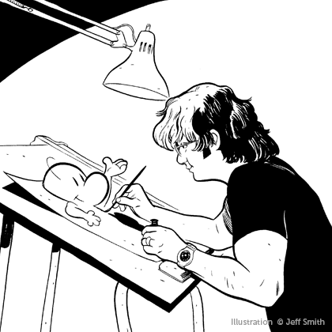

About the Author

Jeff Smith
Born and raised in the American mid-west, Jeff Smith learned about cartooning from comic strips, comic books, and watching animation on TV. After four years of drawing comic strips for Ohio State's student newspaper, Smith co-founded the Character Builders animation studio in 1986. In 1991, he launched a company called Cartoon Books to publish his comic book BONE.
Jeff Smith's work is published in thirteen languages and has won the highest awards in Germany, France, Italy, and at home. Between BONE and other comics projects, Smith spends much of his time on the international guest circuit promoting comics and the art of graphic novels.